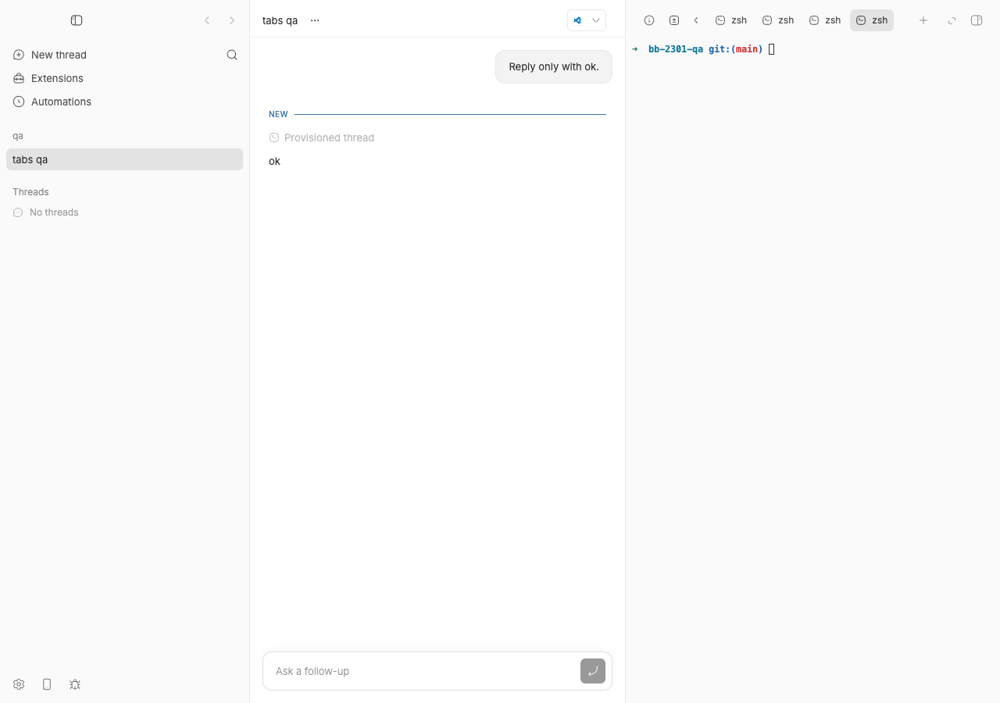
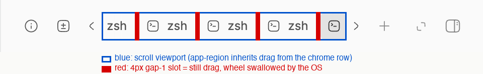
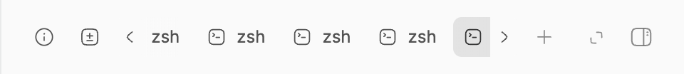

#2301 · Desktop tab scrolling stops outside tab button hit area
Verdict: REPRODUCED (live, in the real Electron shell with OS-level scroll events) · Root-cause confidence: high
1. TL;DR
In the macOS desktop app the right panel's tab row doubles as the window's title bar: the whole chrome row is declared -webkit-app-region: drag, and only the individual tab buttons are carved back out with no-drag. The horizontally scrolling viewport that holds the tabs, including the 4px gaps between them, is left inside the drag region. On macOS, Chromium answers AppKit's hit-test with "no view" for any point that is draggable background, so the OS has nowhere to deliver a scroll-wheel event that lands in such a gap; it is dropped before the renderer ever sees it, which is why even a capturing wheel listener on window stays silent. The visible result: you scroll the tab strip sideways, your pointer drifts one pixel off a tab button into a gap, and the strip freezes until you move back onto a button. I reproduced this with real CGEvent scroll-wheel events posted at the HID level against the Electron 41.7.0 shell: 0 of 5 wheel events arrive in a gap, 5 of 5 arrive after the drag region is removed from the row. PR #2287 adds no-drag to the viewport and fixes it (verified live); a related, pre-existing quirk (tabs scrolled out of view still punch no-drag holes in the window's drag region elsewhere) is documented below.
2. Claims vs findings
| Claim from the issue | Status | Evidence |
|---|---|---|
| Horizontal tab scrolling in the macOS desktop app stops when the pointer crosses a tab button edge into a gap in the same viewport. | Verified | Native wheel events over a tab: delivered, scrollLeft 113 → 83. Same events over the 4px gap between two tabs: wheelCount: 0, scrollLeft unchanged (section 4, steps 6–7). |
A capture listener on window stops firing, so this is not a DOM bubbling boundary. | Verified | The instrumentation is exactly that listener ({capture: true} on window); it recorded nothing for the gap. The control run (same DOM, drag region removed) recorded all 5 events, so nothing in the DOM is eating them. |
| The desktop header is a window drag region. | Verified | getComputedStyle(top-chrome)["-webkit-app-region"] === "drag" in the running Electron app; source: ThreadSecondaryPanel.tsx:784-788. |
Individual tab wrappers are no-drag, but the scroll viewport is not. | Verified | Computed styles dumped from the live app: every tab wrapper no-drag, viewport none (class no-scrollbar min-w-0 overflow-x-auto overflow-y-hidden). Unit test in section 4 fails on this exact assertion at the base commit. |
The overflow fade uses pointer-events: none, so it is not intercepting wheel input. | Verified | Control run: the identical DOM with only the chrome row's app-region switched to no-drag receives every wheel event, so no overlay is involved. |
| "Side chat" tab is where it happens. | Verified (generalised) | The tab kind is irrelevant; reproduced with six terminal tabs. Any 4px gap-1 between any two tabs behaves the same. |
| Scroll arrows remain a workaround. | Unverified (consistent with code) | The chevrons carry chevronNoDragClass (SecondaryPanelTabStrip.tsx:413-415), so clicks reach them; I did not click them in the live run. |
| "Electron stopped routing wheel input when the pointer crossed a tab edge" (PR wording). | Verified, with the precise mechanism | It is Chromium's BridgedContentView.hitTest: returning nil for draggable background (Chromium 146.0.7680.216, the version inside Electron 41.7.0), so AppKit has no NSView to send the NSEventTypeScrollWheel to. See section 5. |
| Investigation environment: macOS 26.3, Node 24.6.0; agent did not run the Electron repro. | Unverified / superseded | This report reproduces it on macOS 26.5.2 / Node 22.23.1 / Electron 41.7.0 with OS-level input, which the issue itself lacked. |
3. Environment
- bb
494f66526913557ab076e048218236f0a6610927(main, 2026-08-24); origin/main is 6 commits ahead (21cb6b68b);git log 494f66526..origin/main -- apps/app/src/components/secondary-panel apps/app/src/lib/bb-desktop.ts apps/desktopis empty, so the bug is still present on main. - macOS 26.5.2 (25F84), Apple Silicon; Node v22.23.1; pnpm 9.15.0.
- Electron 41.7.0 → Chromium 146.0.7680.216 (UA from the live window:
bb-dev/0.39.0 Chrome/146.0.7680.216 Electron/41.7.0). The issue baselinefff3ae82pins the same Electron 41.7.0. - Provider used for the one throw-away thread: codex-cli 0.149.1 (prompt "Reply only with ok.").
- Own dev instance (
scripts/bb-dev-app current --desktop, revision run): Apphttp://localhost:17493, Serverhttp://localhost:25493, Host daemon127.0.0.1:33493, CDP127.0.0.1:45987, data dir~/.bb-dev/bb-machines-HOST.getbb.app-checkouts-bb-.claude-worktrees-wf_846839f8-f8a-50-a54f30dd7030(deleted at the end). The first investigation run used a sibling worktree (ports 13624/21624/29624) and produced the same geometry and counts. - Window geometry during the run:
screenX=80, screenY=80, 1280×900, frameless (titleBarStyle: "hiddenInset"),devicePixelRatio 1, so screen point = client point + (80, 80).
4. Minimal reproduction
Two reproductions: (A) the real thing — OS-level scroll-wheel events against the Electron shell, which is the only way to see this (CDP/Playwright Input.dispatchMouseEvent injects below AppKit hit-testing and cannot reproduce it); (B) a jsdom unit test that pins the DOM defect.
A. Live Electron reproduction
- Build and start your own dev instance with the desktop shell and a CDP port:
pnpm install --frozen-lockfile --prefer-offline && pnpm exec turbo run build BB_DESKTOP_ELECTRON_ARGS="--remote-debugging-port=45987" scripts/bb-dev-app current --desktop # prints App/Server/Host daemon URLs; the Electron window opens on screen
- Create a project and one cheap thread so a thread page with a right panel exists (host id from
pnpm bb:dev machine list --json):mkdir /tmp/bb-2301-qa && git -C /tmp/bb-2301-qa init -q && echo hello > /tmp/bb-2301-qa/README.md \ && git -C /tmp/bb-2301-qa add -A && git -C /tmp/bb-2301-qa -c user.email=qa@x -c user.name=qa commit -qm init curl -s -X POST http://localhost:25493/api/v1/projects -H 'content-type: application/json' \ -d '{"name":"qa","source":{"type":"local_path","path":"/tmp/bb-2301-qa","hostId":"host_a6rpvknmra"}}' # -> {"id":"proj_xjqbkeveh2", ...} eval "$(scripts/bb-dev-app env)" # sets BB_SERVER_URL / BB_HOST_DAEMON_PORT for your instance BB_PROJECT_ID=proj_xjqbkeveh2 pnpm bb:dev thread spawn --project proj_xjqbkeveh2 --provider codex \ --permission-mode accept-edits --title "tabs qa" --prompt "Reply only with ok." --json # -> {"id":"thr_e5pamdbj4k", ...} (pnpm prints a two-line preamble before the JSON) - Drive the Electron window over CDP with
cdp.mjs(Node 22, no dependencies;node cdp.mjs frontraises the window so the native events below land on it). Navigate to the thread and open six terminal tabs so the strip overflows. Every snippet is an IIFE so it can be re-run withoutIdentifier has already been declarederrors:node cdp.mjs js 'location.href = "/projects/proj_xjqbkeveh2/threads/thr_e5pamdbj4k"' node cdp.mjs front node cdp.mjs js '(async () => { const sleep = (ms) => new Promise(r => setTimeout(r, ms)); for (let i = 0; i < 6; i++) { document.querySelector("button[aria-label^=\"Open new tab\"]").click(); await sleep(600); Array.from(document.querySelectorAll("[data-testid=new-tab-actions] button")) .find(b => b.textContent.trim() === "Start terminal").click(); await sleep(900); } const vp = document.querySelector("[data-testid=secondary-panel-tab-strip] .no-scrollbar"); return JSON.stringify({ scrollWidth: vp.scrollWidth, clientWidth: vp.clientWidth }); })()' # -> {"scrollWidth":356,"clientWidth":243} (overflowing) - Install the capture listeners the issue describes and dump the geometry (
geom.js):node cdp.mjs jsfile geom.js # -> viewport x=901..1144 y=12..40, vpAppRegion:"none", chromeAppRegion:"drag", # tabs: 788-844, 848-904, 908-964, 968-1024, 1028-1084, 1088-1144 (each appRegion:"no-drag"), gaps of 4px

Before: the desktop window right after step 3, six zshtabs overflowing the right-panel tab strip. The strip is scrolled to its end (scrollLeft113 = 356 − 243), so only the left chevron is visible; the right chevron is rendered withopacity-0until the strip scrolls back. - Build the tiny native-input helper (
nativeinput.swift). It posts realCGEvents at the HID tap, so they travel through AppKit hit-testing exactly like a trackpad:swiftc -O -o nativeinput nativeinput.swift # usage: ./nativeinput wheel <screenX> <screenY> <wheel1 px> <count> <intervalMs>
- Scroll with the pointer over a tab button (client 936,26 → screen 1016,106), then read the counters:
./nativeinput wheel 1016 106 10 5 40 node cdp.mjs js '(() => { const v = document.querySelector("[data-testid=secondary-panel-tab-strip] .no-scrollbar"); const r = JSON.stringify({wheelCount: window.__wheel.count, wheelTargets: window.__wheel.targets, scrollLeft: v.scrollLeft}); window.__wheel.count = 0; window.__wheel.targets = []; return r; })()' expected: wheel events reach the page and the strip scrolls actual: {"wheelCount":7,"wheelTargets":["SPAN@936,26 dY=-10","svg@936,26 dY=-10","svg@936,26 dY=-10", "DIV@878,1 dY=-4.000244140625","DIV@878,1 dY=-28.4539794921875","DIV@878,1 dY=-102.874755859375","DIV@878,1 dY=-4.000244140625"], "moves":1,"scrollLeft":83} (scrollLeft 113 -> 83; works. The three "@936,26 dY=-10" events are ours, coalesced by AppKit from 5; the four "DIV@878,1" momentum-style deltas are another person's trackpad on this shared Mac hitting the window's top edge and are ignored below)At
scrollLeft83 the tab wrappers sit at 818-874, 878-934, 938-994, 998-1054, 1058-1114, 1118-1174 (viewport still 901-1144), so both chevrons are visible and four 4px gaps are inside the viewport:
Header zoom at scrollLeft83 (base commit, before PR #2287): both chevrons visible, four tabs plus the clipped edges of two more.
Same capture annotated from the live geometry: blue = the scroll viewport (inherits dragfrom the chrome row), red = the four 4pxgap-1slots between tab wrappers (934-938, 994-998, 1054-1058, 1114-1118). Wheel input that lands in a red slot is swallowed by the OS. Step 7 targets the second red slot. - Now scroll with the pointer in the 4px gap between tab 3 and tab 4. After step 6 the tabs sit at 938-994 and 998-1054, so the gap centre is client (996,26) → screen (1076,106):
./nativeinput wheel 1076 106 10 5 40 node cdp.mjs js '...same read as above...' expected: the same 5 wheel events reach the page and the strip keeps scrolling actual: {"wheelCount":0,"wheelTargets":[],"moves":0,"scrollLeft":83} (nothing reaches window's capture listener; scrollLeft unchanged) <-- THE BUG # sanity: what is under the two candidate points at scrollLeft 83 node cdp.mjs js '(() => { const f = (x) => { const e = document.elementFromPoint(x,26); const w = e.closest("[data-secondary-panel-tab-content] > div"); return {el: e.tagName + "." + String(e.className).slice(0,36), insideTabWrapper: !!w, wrapperRect: w ? [w.getBoundingClientRect().x, w.getBoundingClientRect().right] : null}; }; return JSON.stringify({at996: f(996), at966: f(966)}); })()' # -> {"at996":{"el":"DIV.flex w-max items-center gap-1","insideTabWrapper":false,"wrapperRect":null}, # "at966":{"el":"SPAN.truncate max-w-[160px]","insideTabWrapper":true,"wrapperRect":[938.125,994.1875]}} # i.e. (996,26) is the gap; (966,26) is inside tab 3 at this scroll offset. - Control — prove the drag region is the cause and nothing else. Remove it from the chrome row with an inline style and repeat at exactly the same gap point as step 7 (client 996,26 → screen 1076,106; the strip is still at
scrollLeft83):node cdp.mjs js '(() => { const c = document.querySelector("[data-testid=thread-secondary-panel-top-chrome]"); c.style.setProperty("-webkit-app-region", "no-drag"); c.style.setProperty("app-region", "no-drag"); return getComputedStyle(c).getPropertyValue("-webkit-app-region"); })()' # -> "no-drag" ./nativeinput wheel 1076 106 10 5 40 node cdp.mjs js '...same read as above...' expected: with no drag region, the identical DOM point receives the events actual: {"wheelCount":5,"wheelTargets":["DIV@996,26 dY=-10","SPAN@996,26 dY=-10","SPAN@996,26 dY=-10","SPAN@996,26 dY=-10","svg@996,26 dY=-10"],"moves":1,"scrollLeft":33} (all five arrive, strip scrolls 83 -> 33) # put the drag region back node cdp.mjs js '(() => { const c = document.querySelector("[data-testid=thread-secondary-panel-top-chrome]"); c.style.removeProperty("-webkit-app-region"); c.style.removeProperty("app-region"); return getComputedStyle(c).getPropertyValue("-webkit-app-region"); })()' # -> "drag" - Optional — show the regions are not stale after scrolling (the same screen point, two scroll offsets). Set
scrollLeftover CDP and wheel at client (966,26) → screen (1046,106), which is a gap at 113 (tabs 908-964 | 968-1024) and inside tab 3 at 83 (938-994):node cdp.mjs js '(() => { const v = document.querySelector("[data-testid=secondary-panel-tab-strip] .no-scrollbar"); v.scrollLeft = 113; return v.scrollLeft; })()' ./nativeinput wheel 1046 106 10 5 40 ; node cdp.mjs js '...read...' # -> {"wheelCount":0,"wheelTargets":[],"moves":1,"scrollLeft":113} (gap: dropped) node cdp.mjs js '(() => { const v = document.querySelector("[data-testid=secondary-panel-tab-strip] .no-scrollbar"); v.scrollLeft = 83; return v.scrollLeft; })()' ./nativeinput wheel 1046 106 10 5 40 ; node cdp.mjs js '...read...' # -> {"wheelCount":3,"wheelTargets":["SPAN@966,26 dY=-10","svg@966,26 dY=-10","svg@966,26 dY=-10"],"moves":1,"scrollLeft":53} (tab: delivered)
The whole sequence (steps 4-8, the stale check and the section 5.3 hole experiment) is scripted in base-experiments.sh; its unedited output is base-experiments.log.
Full run log with every intermediate geometry read: 2301/repro/native-wheel-experiments.txt.
B. Unit-level repro (jsdom) — fails at 494f66526
Saved as 2301/repro/SecondaryPanelTabStrip.issue2301.test.ts; copy it to apps/app/src/components/secondary-panel/ and run pnpm exec vitest run src/components/secondary-panel/SecondaryPanelTabStrip.issue2301.test.ts from apps/app.
// @vitest-environment jsdom
//
// Repro for get-bb/bb#2301: on macOS desktop the secondary-panel top chrome is
// a window drag region (`[-webkit-app-region:drag]`). Only the individual tab
// wrappers are carved out as `no-drag`; the scroll viewport that contains them
// (and the 4px `gap-1` between tabs) is not. Chromium returns nil from
// BridgedContentView.hitTest for draggable-background points, so AppKit never
// delivers scroll-wheel events that land in a tab gap to the web contents and
// the strip stops scrolling. Expected: every pixel of the viewport is no-drag.
import { cleanup, render } from "@testing-library/react";
import { createElement } from "react";
import { afterEach, describe, expect, it, vi } from "vitest";
import { SecondaryPanelTabStrip } from "./SecondaryPanelTabStrip";
import type { SecondaryPanelRenderableTab } from "./secondaryPanelTab";
afterEach(() => {
cleanup();
vi.unstubAllGlobals();
});
function tab(id: string): SecondaryPanelRenderableTab {
return {
tab: { id, kind: "terminal", title: `zsh ${id}` },
renderTab: () => createElement("button", { type: "button" }, `zsh ${id}`),
renderContent: () => null,
} as unknown as SecondaryPanelRenderableTab;
}
describe("issue #2301: tab viewport must be carved out of the macOS drag region", () => {
it("marks the scroll viewport no-drag on desktop so wheel input survives tab gaps", () => {
vi.stubGlobal(
"ResizeObserver",
class {
observe() {}
disconnect() {}
},
);
const { container } = render(
createElement(SecondaryPanelTabStrip, {
activeTabId: "a",
tabs: [tab("a"), tab("b"), tab("c")],
onReorderTab: vi.fn(),
usesDesktopChrome: true,
isPanelOpen: true,
}),
);
const viewport = container.querySelector(".overflow-x-auto");
expect(viewport).not.toBeNull();
const content = viewport?.querySelector("[data-secondary-panel-tab-content]");
expect(content?.className).toContain("gap-1");
// Each tab wrapper is carved out ... (dnd-kit also mounts hidden
// live-region nodes inside the row, so select the real tab wrappers.)
const wrappers = Array.from(content?.children ?? []).filter((node) =>
node.className.includes("shrink-0"),
);
expect(wrappers.length).toBe(3);
for (const wrapper of wrappers) {
expect(wrapper.className).toContain("[-webkit-app-region:no-drag]");
}
// ... but the viewport around and between them is not. On main this
// assertion FAILS: the viewport class list has no app-region token, so the
// gaps between tabs inherit the chrome row's `drag` region.
expect(viewport?.className).toContain("[-webkit-app-region:no-drag]");
});
});
$ pnpm exec vitest run src/components/secondary-panel/SecondaryPanelTabStrip.issue2301.test.ts # at 494f66526 FAIL @bb/app:isolated src/components/secondary-panel/SecondaryPanelTabStrip.issue2301.test.ts > issue #2301: tab viewport must be carved out of the macOS drag region > marks the scroll viewport no-drag on desktop so wheel input survives tab gaps AssertionError: expected 'no-scrollbar min-w-0 overflow-x-auto …' to contain '[-webkit-app-region:no-drag]' Expected: "[-webkit-app-region:no-drag]" Received: "no-scrollbar min-w-0 overflow-x-auto overflow-y-hidden" ❯ src/components/secondary-panel/SecondaryPanelTabStrip.issue2301.test.ts:66:33 Test Files 1 failed (1)
The tab-wrapper assertions pass (they are no-drag); only the final viewport assertion fails. With PR #2287 applied the same file passes (log). Raw base-commit log: vitest-base-494f66526.txt.
Repro files: 2301/repro/
5. Root cause
5.1 The DOM: the drag region is carved out per tab, not per viewport
On macOS desktop the panel's top chrome row is the window's drag handle (ThreadSecondaryPanel.tsx#L783-L792):
<div
data-testid="thread-secondary-panel-top-chrome"
className={cn(
CHROME_ROW_CLASS,
"min-w-0 justify-between gap-2 px-4",
usesDesktopChrome && usesWindowChrome && MACOS_WINDOW_DRAG_CLASS, // "select-none [app-region:drag] [-webkit-app-region:drag]"
Inside it, SecondaryPanelTabStrip only puts no-drag on each sortable tab wrapper (L412-L415, L578-L589) and on the two chevrons. The scroll viewport and its gap-1 flex row carry no app-region at all (L515-L531):
<div
ref={viewportRef}
onClickCapture={handleClickCapture}
className="no-scrollbar min-w-0 overflow-x-auto overflow-y-hidden" // <-- inherits the row's `drag`
>
<div ref={contentRef} data-secondary-panel-tab-content className="flex w-max items-center gap-1"> // 4px drag slots
{dndTabs} // each wrapper: [-webkit-app-region:no-drag]
Blink collects one rectangle per element that sets app-region (LayoutObject::AddDraggableRegions), and Electron folds the list into an SkRegion (union for drag, difference for no-drag; electron_api_web_contents.cc#L2117-L2125). So the window's draggable region is "the whole chrome row minus each 56px tab wrapper minus the chevrons". The 4px strips between wrappers, and any viewport pixels not covered by a wrapper, remain draggable.
5.2 The platform: macOS has no NSView to deliver a wheel event to inside a drag region
Electron 41 implements frameless drag regions through Chromium's views layer: NativeAppWindowFrameViewMacClient::NonClientHitTest → NativeWindow::NonClientHitTest returns HTCAPTION for points inside the SkRegion. On the AppKit side, Chromium's content view answers the OS hit-test with nil for those points. This is the code that ships inside Electron 41.7.0 (Chromium 146.0.7680.216, bridged_content_view.mm#L286-L317; local copy here):
// NSWindow calls -[contentView hitTest:] to determine the target NSView for
// mouse up and down events. ...
- (NSView*)hitTest:(NSPoint)point {
...
_bridge->host()->GetHitTestResult(flippedPoint, &hitTestResult);
// If `point` is classified as a draggable background (HTCAPTION), return nil
// so that it can lead to a window drag or double-click in the title bar.
if (hitTestResult == remote_cocoa::mojom::HitTestResult::kDraggableBackground) {
return nil;
}
...
return [super hitTest:point]; // -> RenderWidgetHostViewCocoa for normal web content
}
AppKit routes NSEventTypeScrollWheel to whatever hitTest: returns for the pointer location. nil means "no view": the window itself receives the event, does nothing with it, and the RenderWidgetHostViewCocoa (whose scrollWheel: is what forwards wheel input to Blink) is never called. Because the drop happens in the browser process before the event is ever converted to a WebMouseWheelEvent, no renderer-side listener — capturing, passive, on window or anywhere else — can observe it. That is exactly what the issue measured. The same hit-test also explains why mousemove does not fire over drag regions (shouldIgnoreMouseEvent: in the same file).
Why "crossing the button edge" feels like the trigger: while the pointer is over a tab wrapper the hit-test returns the web view and each wheel tick scrolls the strip; the moment the pointer enters a 4px gap (or the strip's chevron-side padding) every tick is dropped at the OS level. With a trackpad the deltas keep coming but none arrive, so the strip looks frozen.
Regions are not stale after scrolling (a hypothesis I checked and refuted): Blink marks draggable regions dirty on scroll-offset changes and recomputes them in post-layout tasks (LocalFrameView::UpdateDocumentDraggableRegions). Run 4 in the experiment log (step 9 above) shows the same screen point dropped while it is a gap and delivered once a tab has scrolled under it.
5.3 Deeper, pre-existing issue: clipped tabs punch holes in the drag region elsewhere
AddDraggableRegions uses the element's unclipped absolute border box. A no-drag tab that is scrolled out of the viewport still contributes its rectangle, wherever that rectangle happens to land. In the live run, with scrollLeft = 113, tab 1 sits at absolute x = 788..844 while the viewport starts at 901; x < 801 is the conversation column's <header>, itself a drag region with no no-drag descendants at that spot. Native wheel events at client (785, 26) were dropped (drag), while all five events at client (790, 26) were delivered with target HEADER — an invisible 12px no-drag hole in the thread header. With more tabs scrolled out, these holes tile the entire conversation header (only 4px drag slivers remain), silently removing the main title-bar drag handle. PR #2287 does not change this; see the proposed fix.
6. Proposed fix (first principles)
- Carve out the viewport, not the tabs. In
SecondaryPanelTabStrip.tsxaddMACOS_APP_REGION_NO_DRAG_CLASSto theviewportRefelement whenusesDesktopChrome(this is what PR #2287 does). The viewport's border box is the clip box, so the carve-out is exactly the visible tab area including the gaps; the chrome row outside it stays draggable. - Then drop the per-tab app-region tokens. With the viewport carved out,
noDragClassonSortablePanelTabis redundant inside the viewport and harmful outside it (5.3). Keep whatever layout the class was also providing (MACOS_WINDOW_NO_DRAG_CLASSisrelative z-50+ the tokens; only remove the tokens, or pass a layout-only class). Scrolled-out tabs then stop subtracting rectangles from the window's drag region. Risk: none for input (the viewport covers every visible tab pixel); verify theDragOverlayclone (portaled tobody) still drags — it is rendered during an active pointer capture, so it is unaffected. - Optional: the 4px
gap-1slots between the pinned Info/Diff tabs, the strip and the+button (the toolbar container,ThreadSecondaryPanel.tsx:796) also swallow wheel input, but they are outside the scrolling viewport and behave like a native title bar; leave them.
This is a UI-only change; no server/daemon boundary or HOST_DAEMON_PROTOCOL_VERSION is involved.
7. PR review
PR #2287 — "Fix desktop tab scrolling stopping outside tab buttons" (kongenpei, base fff3ae82, 1 commit 8d13e32, +33/−1; OPEN, MERGEABLE, no CI checks on the branch as of 2026-08-24)
What it changes. SecondaryPanelTabStrip.tsx: the viewport's className becomes cn("no-scrollbar min-w-0 overflow-x-auto overflow-y-hidden", usesDesktopChrome && MACOS_APP_REGION_NO_DRAG_CLASS) with a comment. SecondaryPanelTabStrip.test.ts: one new jsdom test asserting the viewport carries both app-region tokens when usesDesktopChrome and none otherwise. Diff: pr-2287.diff.
Root cause or symptom? Root cause, at the right layer. The defect is the shape of the no-drag carve-out in the renderer DOM; making the viewport the carve-out is the minimal correct change. Verified live: with the diff applied to 494f66526 (Vite HMR into the running Electron shell) the viewport computes -webkit-app-region: no-drag and the step 7 burst at the same gap point (client 996,26, scrollLeft 83) now yields {"wheelCount":5,"wheelTargets":["DIV@996,26 dY=-10","SPAN@996,26 dY=-10","SPAN@996,26 dY=-10","SPAN@996,26 dY=-10","svg@996,26 dY=-10"],"moves":0,"scrollLeft":33} (script: pr-experiment.sh, output: pr-experiment.log). The header looks identical before and after, which is the point: the fix changes the window's hit-test region, not a pixel.

scrollLeft 83). Visually unchanged; the viewport now carries [app-region:no-drag] [-webkit-app-region:no-drag].Tests I ran. git apply --check and git apply on 494f66526: clean. pnpm exec vitest run SecondaryPanelTabStrip.issue2301.test.ts SecondaryPanelTabStrip.test.ts: 2 files, 4 tests passed (my repro test flips from fail to pass). pnpm exec turbo run typecheck --filter=@bb/app --force: passes (log). Follow-up finding verified live as well: with the PR plus noDragClass = "relative z-50" (no app-region tokens on the tab wrapper) the header hole at client (790,26) closes (0 events) while the viewport gap and the tabs still receive 5/5 (followup-experiment.sh, log). GitHub reports the branch mergeable; gh pr checks 2287 shows no CI checks have run on the branch yet.
Findings.
| Where | Severity | Finding |
|---|---|---|
SecondaryPanelTabStrip.tsx:412, :578-589 (unchanged by the PR) | Medium (pre-existing, follow-up) | Per-tab noDragClass is now redundant inside the carved-out viewport and still harmful outside it: scrolled-out tabs keep subtracting unclipped rectangles from the window's drag region (section 5.3, measured). Dropping the app-region tokens from the tab wrapper in the same change would make the viewport the single source of truth and stop the holes. Not a regression introduced by this PR. |
SecondaryPanelTabStrip.test.ts (new test) | Low | The test asserts class strings only, with tabs: []. It pins the DOM fix but cannot catch the platform behaviour; acceptable given Electron input cannot be exercised in jsdom. Consider rendering at least two tabs so the gap-1 row exists and the assertion reads as "gaps are inside a no-drag box". |
SecondaryPanelTabStrip.tsx:525-527 (new comment) | Nit | "so Electron keeps routing wheel events" — the drop happens in Chromium's BridgedContentView.hitTest: returning nil for draggable background; naming that makes the comment searchable when Chromium changes (upstream added a scroll-wheel carve-out to that hit-test on 2026-08-14, after Chromium 146, so future Electron versions may route these events to the views layer instead — still not to Blink — and this carve-out remains necessary). |
| PR description | Nit | "Fresh agent review: approved, no findings" is unverifiable; no CI has run on the branch. Run CI before merging. |
No server/daemon wire changes, no casts, no silent behaviour change for the web build (usesDesktopChrome=false leaves the class list untouched, asserted by the PR's test). Security: none.
Verdict: MERGE (after CI runs), with the medium finding as a recommended follow-up or a one-line addition to this PR.
8. Related issues
- #1440 (closed) — app chrome included in text selection; same drag-row element (
select-noneinMACOS_WINDOW_DRAG_CLASS). - #435 (closed) — right panel polish incl. tab-strip rough edges (history of the strip's overflow/scroll behaviour: #90, #103, #972, #1083, #1425).
- Same pattern already handled elsewhere in the app:
getReservedInlinePanelToggleClassName(ThreadSecondaryPanel.tsx:128-144) andRootComposeSecondaryContent.tsx:25carve reserved slots out of the drag row for clicks; this issue is the wheel-input analogue. - Upstream: Chromium commit
cb97ef42add2(2026-08-14, "[Focus] Implementing Swipe to Switch Focused Group") adds a scroll-wheel exception toBridgedContentView.hitTest:; Electron 41's Chromium 146 predates it.
9. Appendix
Live geometry dump (base commit, after six tabs, scrollLeft 113)
{"viewport":{"x":901,"y":12,"width":243,"height":28},"vpAppRegion":"none",
"vpClass":"no-scrollbar min-w-0 overflow-x-auto overflow-y-hidden","scrollLeft":113,"scrollWidth":356,"clientWidth":243,
"contentClass":"flex w-max items-center gap-1",
"tabs":[{"x":788,"right":844.0625,"appRegion":"no-drag"},{"x":848.0625,"right":904.125,"appRegion":"no-drag"},
{"x":908.125,"right":964.1875,"appRegion":"no-drag"},{"x":968.1875,"right":1024.25,"appRegion":"no-drag"},
{"x":1028.25,"right":1084.3125,"appRegion":"no-drag"},{"x":1088.3125,"right":1144.375,"appRegion":"no-drag"}],
"chromeAppRegion":"drag","win":[80,80,1280,900,1280,900,1]}
Geometry with PR #2287 applied (HMR)
"vpAppRegion":"no-drag","vpClass":"no-scrollbar min-w-0 overflow-x-auto overflow-y-hidden [app-region:no-drag] [-webkit-app-region:no-drag]"
Hole experiment (section 5.3), scrollLeft 113, tab 1 at 788..844
wheel @ client (600,26) header, plain drag -> {"wheelCount":0,"wheelTargets":[],"moves":0,"scrollLeft":113}
wheel @ client (785,26) header, 3px left of tab-1 -> {"wheelCount":0,"wheelTargets":[],"moves":0,"scrollLeft":113}
wheel @ client (790,26) header, inside tab-1 rect -> {"wheelCount":5,"wheelTargets":["HEADER@790,26 dY=-10" x5],"moves":0,"scrollLeft":113}
wheel @ client (831,26) pinned Info tab (no-drag) -> {"wheelCount":5,"wheelTargets":["path@831,26 dY=-10" x5],"moves":0,"scrollLeft":113}
elementFromPoint(790,26) = HEADER.h-[48px] border-b border-border-seam-ver ; app-region chain: ["HEADER:drag"] (no no-drag element in the DOM there)
PR #2287 + follow-up (tab wrappers compute app-region "none", viewport "no-drag"), scrollLeft 113:
wheel @ client (790,26) header, inside tab-1 rect -> {"wheelCount":0,"wheelTargets":[],"moves":0,"scrollLeft":113} (hole closed)
wheel @ client (966,26) gap inside viewport -> {"wheelCount":5,"wheelTargets":["DIV@966,26 dY=-10",...],"moves":0,"scrollLeft":63}
wheel @ client (936,26) over a tab -> {"wheelCount":5,"wheelTargets":["SPAN@936,26 dY=-10",...],"moves":0,"scrollLeft":13}
Electron / Chromium sources consulted (downloaded with gh api, tags v41.7.0 and 146.0.7680.216)
electron/shell/browser/native_window_mac.mm L131-143 NativeAppWindowFrameViewMacClient::NonClientHitTest electron/shell/browser/native_window.cc L675-698 NativeWindow::NonClientHitTest (draggable_region_providers_) electron/shell/browser/api/electron_api_web_contents.cc L2117-2125 DraggableRegionsChanged -> DraggableRegionsToSkRegion electron/shell/browser/ui/cocoa/electron_ns_window.mm sendEvent: (only right-click/ctrl-click disable regions) chromium/components/remote_cocoa/app_shim/bridged_content_view.mm @146.0.7680.216 L289-317 hitTest: returns nil for kDraggableBackground chromium/content/app_shim_remote_cocoa/render_widget_host_view_cocoa.mm shouldIgnoreMouseEvent:, scrollWheel:, mouseDownCanMoveWindow -> YES chromium/third_party/blink/renderer/core/layout/layout_object.cc L4597-4617 AddDraggableRegions (unclipped PhysicalBorderBoxRect) chromium/third_party/blink/renderer/core/frame/local_frame_view.cc L1944-1958 UpdateDocumentDraggableRegions chromium/third_party/blink/renderer/core/paint/paint_layer_scrollable_area.cc L1093, L1914 SetDraggableRegionsDirty on scroll/scrollbar changes
Commands run (chronological, abbreviated)
gh issue view 2301 --comments; gh pr view 2287; gh pr diff 2287 | diff -q - pr-2287.diff (identical) git fetch origin main; git log 494f66526..origin/main --oneline -- apps/app/src/components/secondary-panel apps/app/src/lib/bb-desktop.ts apps/desktop (empty) git checkout 494f66526; pnpm install --frozen-lockfile --prefer-offline; pnpm exec turbo run build BB_DESKTOP_ELECTRON_ARGS="--remote-debugging-port=45987" scripts/bb-dev-app current --desktop curl -X POST $BB_SERVER_URL/api/v1/projects ...; pnpm bb:dev thread spawn ... --prompt "Reply only with ok." node cdp.mjs js/jsfile/front/shot/clip ...; swiftc -O -o nativeinput nativeinput.swift zsh base-experiments.sh (steps 4-8, stale check, hole experiment -> base-experiments.log) pnpm exec vitest run src/components/secondary-panel/SecondaryPanelTabStrip.issue2301.test.ts (fails at base) git apply pr-2287.diff; zsh pr-experiment.sh (fixed); vitest (2 files, 4 passed); pnpm exec turbo run typecheck --filter=@bb/app --force sed SortablePanelTab noDragClass -> "relative z-50"; zsh followup-experiment.sh (hole closed, input intact) git checkout -- <PR files>; rm repro test from tree; pnpm dev:stop; cleanup of data dir and /tmp scratch (first investigation run, sibling worktree f8a-38: same commands; its Electron instance was killed once by another agent's cleanup SIGHUP and restarted; all numbers quoted in this report are from the revision run in worktree f8a-50)
Caveats
- The native-input helper posts events at the HID tap; that is as close to a physical trackpad as software gets, but it is still synthetic. Delivery counts of 3/5 over tabs (vs 5/5 in other runs) are AppKit coalescing, not drops; the gap runs are 0/5 every time.
- The CDP screenshots cannot show the cursor (system
screencapturelacks screen-recording permission here), so the annotated figure marks the gap rectangles from the live geometry instead of showing the pointer. - Other agents share this Mac; four unrelated momentum-style wheel events at client (878,1) (another trackpad hitting the window's top edge) landed during step 6 and are excluded from the analysis. The first investigation run saw a similar burst at client (432..450, 65..68).
- Issue Type/Effort could not be read from the GitHub project (token lacks
read:project); Priority comes from the task brief.
Verification
An independent verifier followed the "Minimal reproduction" literally at 494f66526 in their own worktree and dev instance (App :11209 / Server :19209 / Host daemon :27209) and reproduced every number: six tabs give {"scrollWidth":356,"clientWidth":243}, the same viewport/tab geometry, wheel over a tab delivered (113 → 83), wheel in the gap at client (996,26) gives wheelCount 0. They also confirmed the section 5.3 hole at (790,26), the PR #2287 fix via HMR (5/5 in the gap), the proposed follow-up (header hole closes, gap and tabs still 5/5), the jsdom test flipping fail → pass, the byte-identical bridged_content_view.mm at tag 146.0.7680.216, and that origin/main does not touch the affected files.
The verifier found one major problem: the original step 8 (control) pointed at client (966,26), which at scrollLeft 83 is inside tab 3's no-drag wrapper rather than a gap, so a reader following the steps literally would have seen events delivered over a tab (which already works at base); the quoted "53 → 3" came from an intermediate run the steps omitted. This revision re-ran the whole sequence from scratch in a fresh worktree and instance (base-experiments.sh → log): step 8 now uses the same gap point as step 7 (client 996,26 → screen 1076,106) and quotes the real output (wheelCount 5, scrollLeft 83 → 33); the stale-region check became an explicit optional step 9. Minor fixes from the same review: the "before" caption no longer claims both chevrons are visible at scrollLeft 113; the annotated figure was regenerated at scrollLeft 83 (both chevrons visible) with a two-line legend; the previously unreferenced before-zoom is now shown next to the after-zoom; PR #2287 and its commit are linked; the Environment bullet states the exact empty git log path filter instead of characterising the newer commits; all CDP snippets are IIFEs; cdp.mjs gained a front command. The PR verdict and the root cause are unchanged.